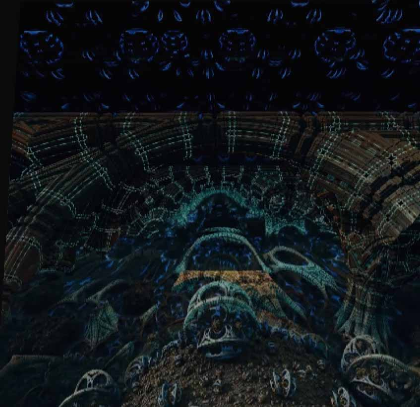
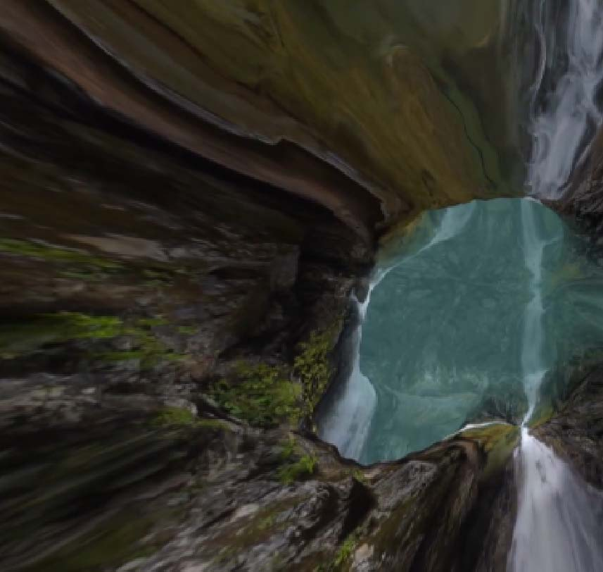

Het thuis voor nieuwe mediakunst.
Ontdek grootschalige,
multisensoriële tentoonstellingen die aannames uitdagen en de gedachten verruimt.
We zoeken,
tonen en bevragen wat Nxt inhoudt.
Exposities en Evenementen
Goede Wijn
Koppel onze betoverende digitale kunst in realtime aan een glas wijn,
geselecteerd door Café Restaurant Metro.
Queer Intelligentie
Terwijl we Pride-maand vieren en de laatste weken van onze tentoonstelling,
UFO Unidentified Fluid Other.
Filmvertoning
Kom en laat al je illusies van zelf breken in het nieuwste videowerk van beeldend kunstenaar Lu Yang,
Doku The Self.
XENOPUNK VR
"Xenopunk" is een nieuwe interpretatie van het kenmerkende door AI aangestuurde digitale ecosysteem van het collectief.
Museumnacht Amsterdam
Betreed een portaal naar een ander paradigma en dompel jezelf onder in de nieuwste tentoonstelling van Nxt Museum,
UFO.
ADE Ritme
We beginnen met een optreden van kunstenaar en programmeur YUXI CAO en geluidskunstenaar Lau Hiu Kong (Lawrence).
Virtuele Galerij
Verken de wereld,
waar organische artefacten zoals koralen en fossielen transformeren in digitale natuur.

Ik gebruik fractalformules om te onthullen wat al op het doek van de natuur bestaat.

Verken de Acropia,
waar organische artefacten transformeren in digitale natuur.
Ik ondermijn de blik op hoe lichamen van vrouwen worden afgebeeld via de expressie.